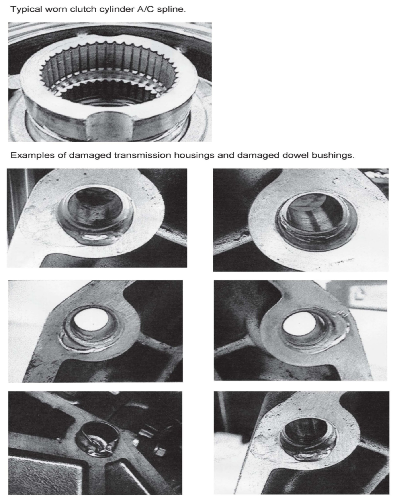

A/T - Failures Due To Incorrect Installation
SI B24 05 11Engine
December 2011
Technical Service
This Service Information bulletin replaces SI B01 04 98 dated June 1998.
SUBJECT
Transmission Failures Due to Incorrect Installation
MODEL
All
SITUATION
Transmission failure and damage can result from the incorrect installation of the transmission.
These transmission failures and or damages are often caused by damaged, misaligned or missing dowel bushings between the engine block and the transmission housing. The resulting transmission-to-engine misalignment will gradually wear off the splines on the input shaft of the clutch cylinder until power transfer is no longer possible.
The failure symptom relating to the misalignment is a popping sound while driving,loss of forward and reverse gears and finally totals failure of the transmission. Transmission failure may occur between 1,000 and 25,000 miles after removal of the engine and or transmission depending on the severity of the misalignment.
Misalignment of the transmission to the engine can also occur as a result of improper engine removal procedures (transmission is left in vehicle during short block replacement), etc.
It is imperative that the proper procedures, tools and equipment necessary to repair or replace an engine or transmission be used. Additional installation information can be found in SI B11 05 11 "Engine Removal and Installation Tips".
See attached document describing the damage that will result from improper transmission installation.
WARRANTY INFORMATION
The warranty does not apply to the following:
Damage that results from improper repair.
Claims for transmissions replacements that result from the situation described in this Service Information bulletin will not be accepted.
ATTACHMENT

B240511